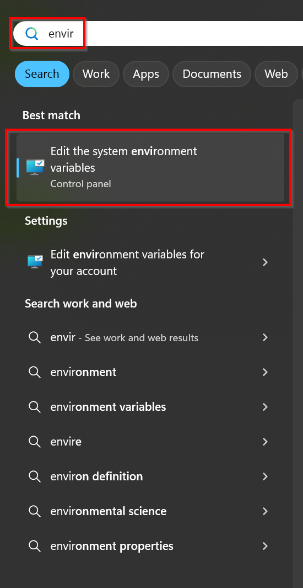
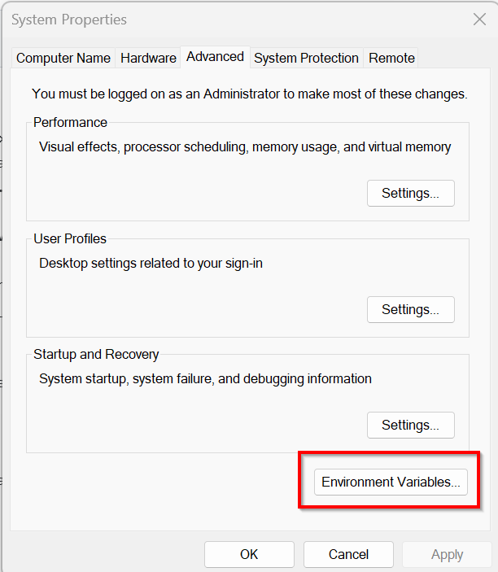
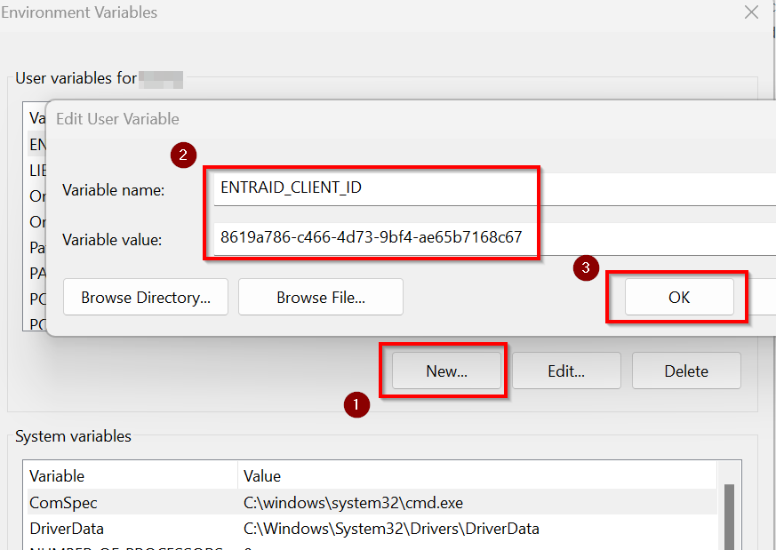
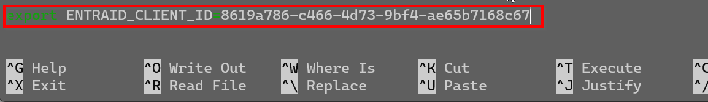
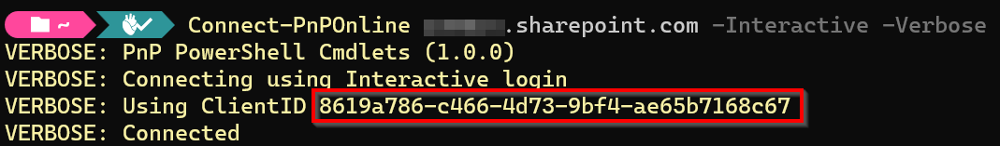

Set a default Client ID
As of September 9th, 2024, it is no longer possible to use PnP PowerShell with -Interactive without providing your own Entra ID App Registration by passing in -ClientId as well. To avoid having to add -ClientId on every connect, you can also perform the below task to set the default ClientId for your environment. This avoids you having to update all of your scripts to include -ClientId in the Connect-PnPOnline statements, making the impact of this change smaller by not having to update existing scripts.
By storing a client id for a tenant
Note
This functionality is only available in the versions newer than 2.12.0
This options allows you to have different client ids for different tenant.
To set this use the Set-PnPManagedAppId cmdlet. You do not have to be connected to a tenant for this.
To set a client id for tenant with url https://yourtenant.sharepoint.com, you enter:
Set-PnPManagedAppId -Url https://yourtenant.sharepoint.com -AppId f0e2b362-8973-4fc7-a293-3c73e2677e79
This will add an entry to your Windows Credential Manager, the macOS keychain, or the Linux Secret Service. If you have configured a default vault through Microsoft.PowerShell.SecretManagement, that vault will be used instead. Connect-PnPOnline will use this value to match the correct client ID with the URL you are connecting to, so you no longer need to pass -ClientId, e.g.
Connect-PnPOnline -Url https://yourtenant.sharepoint.com -Interactive
You can manage entries using the Get-PnPManagedAppId and Remove-PnPManagedAppId cmdlets. Using these cmdlets it is possible to have different client/app ids for different tenants, which is usefull if you are a consultant serving multiple customers for instance.
By setting an environment variable
You can set an environment variable on your machine or in your profile to default to the ClientId you configure in it. The name of the environment variable should be either: ENTRAID_APP_ID, or ENTRAID_CLIENT_ID, or AZURE_CLIENT_ID. You only need one of these, not all of them. They will be used in the order shown, i.e. if you set a value for AZURE_CLIENT_ID and another one for ENTRAID_APP_ID, the ENTRAID_APP_ID entry will be used and the other will be ignored.
As the value for the environment variable, set the GUID of the Client Id / App Id from Entra ID of your own App Registration.
Steps for Windows using PowerShell
Simply run this line:
[System.Environment]::SetEnvironmentVariable('ENTRAID_CLIENT_ID', '<client id of your Entra ID App Registration>', [EnvironmentVariableTarget]::User)
Steps for Windows using the user interface
To create a persistent environment variable on a Windows machine, follow the below steps.
Open the Windows start menu and search for Environment variables and click on Edit the system environment variables

Click on Environment Variables

Under User variables for <username>, click the New button. As the Variable name, enter:
ENTRAID_CLIENT_ID
As the Variable value enter the Client ID of your Entra ID application registration which you would like to use as the default for all Connect-PnPOnline executions.
Close all open dialog boxes by clicking on OK

Steps for Linux
To create a persistent environment variable on a Linux machine, follow the below steps.
Connect to your Linux machine
Execute:
nano ~/.bashrcHit CTRL+END to jump to the end of the file and add the line:
export ENTRAID_CLIENT_ID=<client id of your Entra ID App Registration>
Hit CTRL+X, type Y to save and close the file
Execute:
source ~/.bashrcThis will load the newly added system variable into the current session.
To validate that the environment variable is there, execute:
echo $ENTRAID_CLIENT_ID
Troubleshooting
In case you want to validate which ClientID is being used to connect, simply add -Verbose to your Connect-PnPOnline statement to see which ClientID is used to make the connection.
